Every GPS tool you need. Your position stays yours.
GPS Pro puts 23 tools in one app: your position in seven formats including OS grid references, a compass that points to your saved places, a speedometer, a satellite sky plot, maps with contour lines you can download for no signal, a track recorder, an altimeter, a GPS alarm for your stop, geofences and a route optimiser.
Then weather with Met Office warnings, the UK air quality index, sun and moon times, an emergency screen and a torch. There are no adverts and no account, and nothing goes online until you switch that extra on. Every connection it makes is listed in the app.
Download for AndroidHow to install
- Version 1.0.1
- Android 10 or later
- 27.1 MB
Free, with nothing to unlock. No adverts, no account with the developer, no tracking. Compare or read the release notes.
Chrome may say the file might be harmful. It shows this for app files that do not come from Google Play. Choose Download anyway.
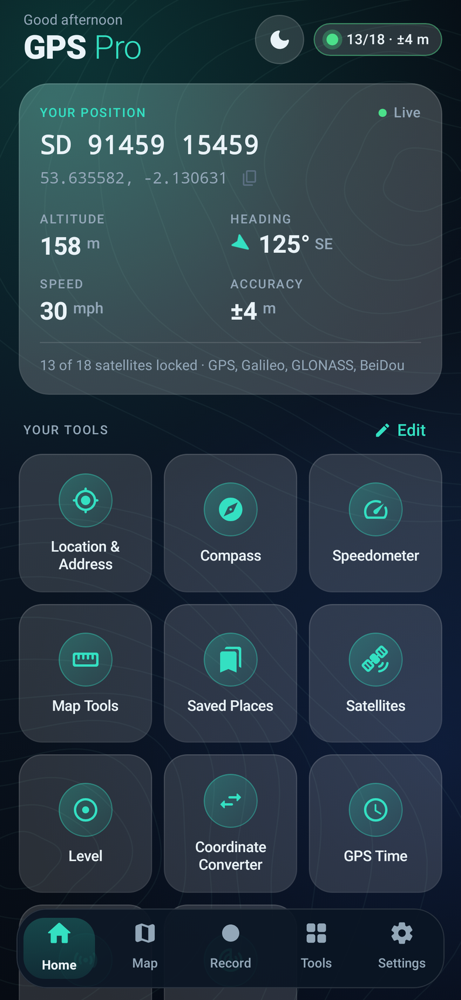
- No advertsNone in the app and none on this site.
- Nothing to buyAll 23 tools are free, with nothing locked.
- Online extras offMaps, search and weather go online only after you switch each one on.
- No accountNothing to sign up for.
A look inside
These are the real screens, drawn from the app's own code on a phone profile, with made-up places and tracks around Rochdale and the Lake District. Swipe or scroll sideways to see them all.
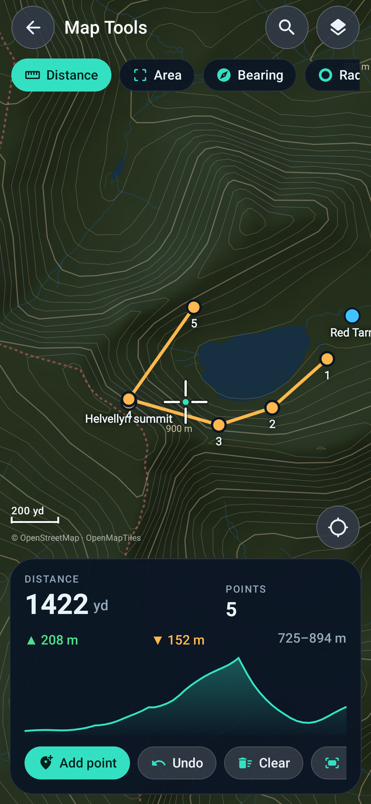
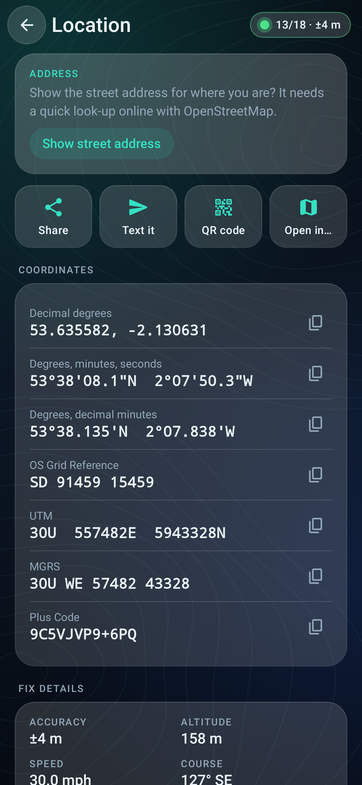
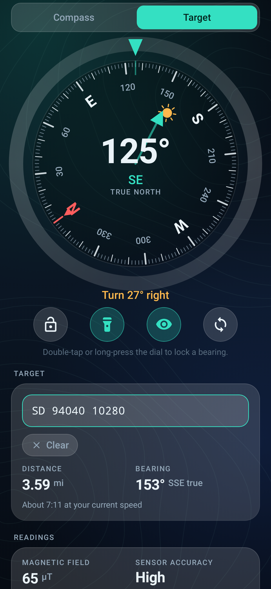
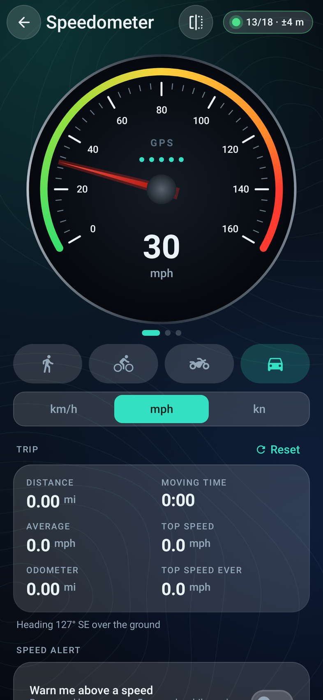
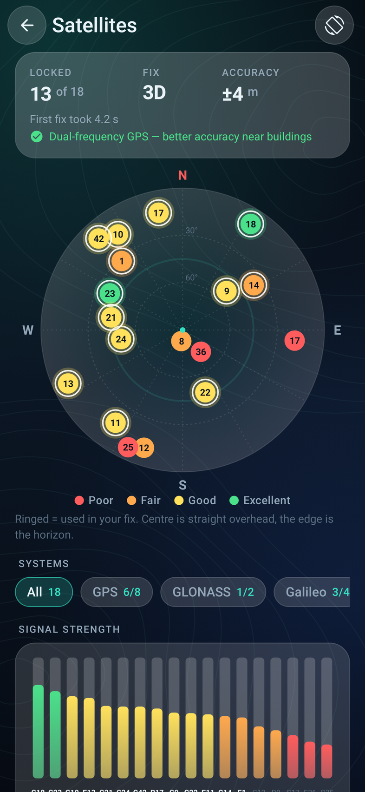
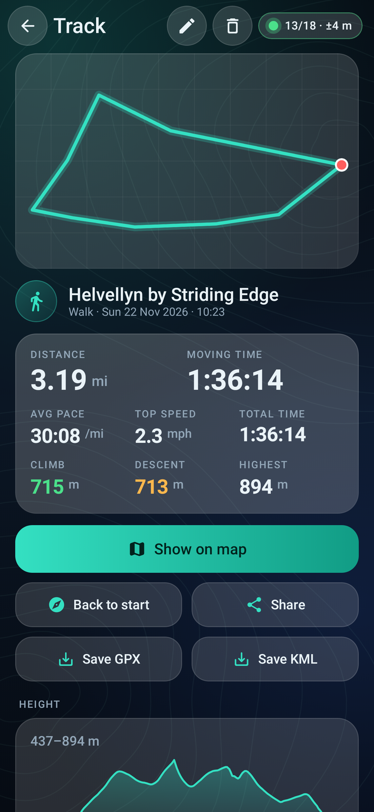
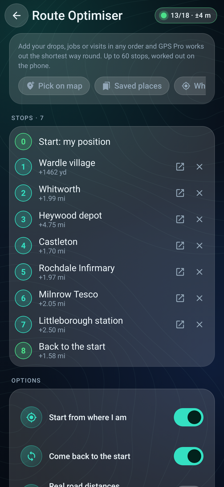
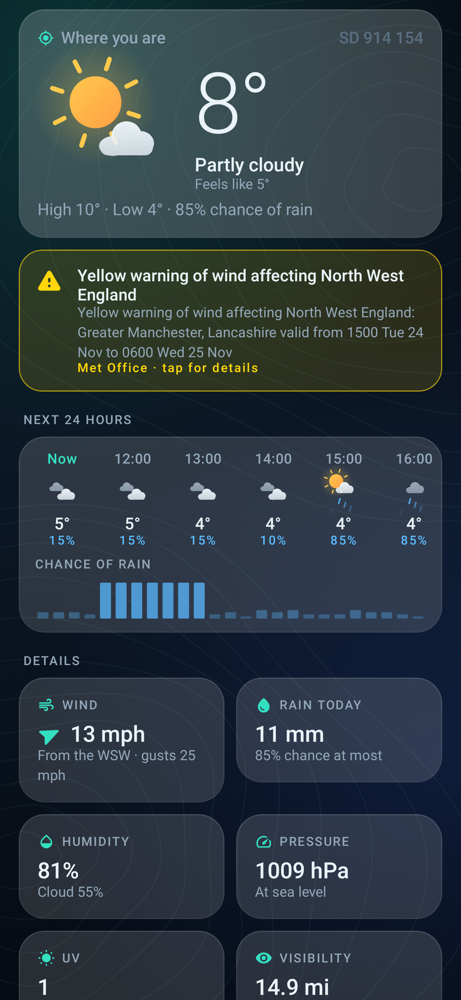
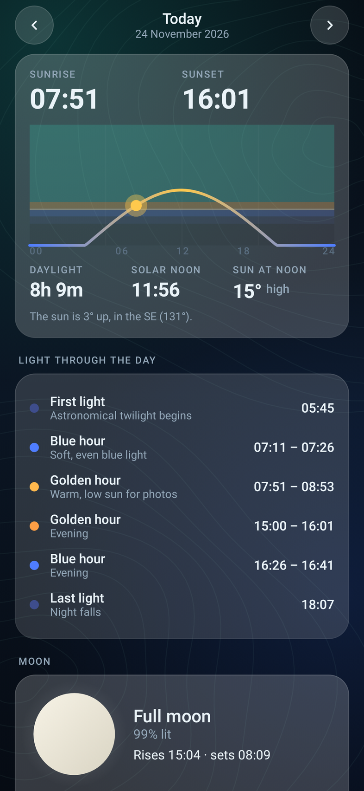
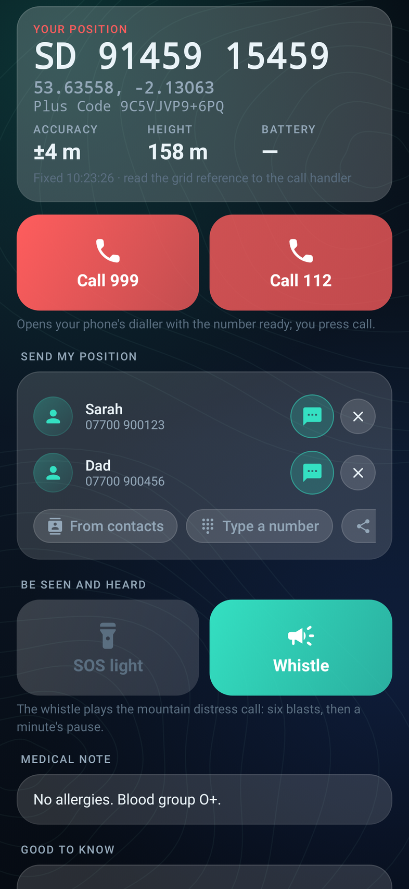
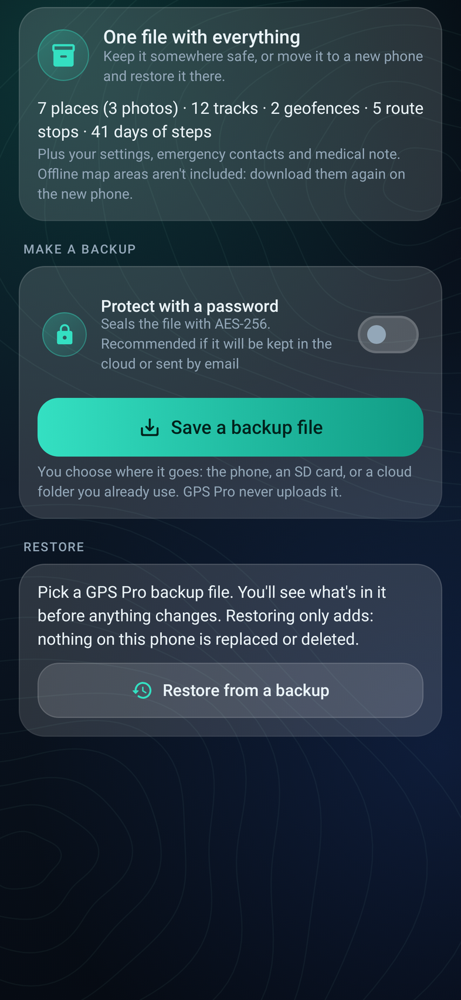
How it works
GPS Pro reads your phone's own GPS, compass and sensors. Most tools never need the internet at all.
Allow location
GPS Pro asks for your location while you use it. It never asks for location all the time, and it keeps working in the background only while you record a track, run an alarm or watch a geofence, with a notification showing.
Use the tools
Position, compass, speed, satellites, level, sensors, altimeter, tracks, alarms, geofences, sun and moon, the emergency screen and the torch all work with no signal.
Switch on extras if you want them
Online maps, place search, street addresses, road distances, weather and air quality are off until you switch each one on. Each says exactly what it sends, and Settings, Network log lists every connection made.
Everything is in, and all of it is free
Nothing below is held back for a paid tier, because there is no paid tier.
Where you are
- Seven formats
- Decimal degrees, degrees and minutes, degrees minutes and seconds, OS grid reference, UTM, MGRS and Plus Code, each one tap to copy or share.
- Compass
- True or magnetic north, heading lock, and a target bearing to any saved place or point on the map.
- Satellites and GPS time
- A sky plot with every satellite system, signal strength, and satellite time against your phone's clock.
- Coordinate converter
- Type or paste a position in any format and get all the others.
Maps
- Street and Topo
- Clear maps from OpenStreetMap, with hill shading and contour lines worked out on the phone.
- Offline areas
- Download a county, a national park or your own box at the detail you choose, with the size shown before you start.
- Map Tools
- Distance along a line, area in hectares and acres, bearing, radius and a height profile.
- Saved places
- Places with notes, categories and photos, shown on the map and sent to the compass. GPX in and out.
On the move
- Track recorder
- Walk, run, ride or drive, with auto-pause, splits, height and speed charts, and GPX and KML export. A crash or restart loses nothing.
- Speedometer
- Three dials, a head-up display, a trip computer and a speed alert.
- Altimeter and steps
- Height from GPS, the barometer and terrain blended together, and a daily step count with a goal.
- GPS alarm and geofences
- An alarm that wakes you as you near your stop, and alerts when you enter or leave an area, shared by link or QR code.
Plan and stay safe
- Route Optimiser
- Up to 60 stops put in the shortest order, as a round trip or one way, as the crow flies or by road.
- Weather and air
- Now, 24 hours and seven days, Met Office warnings for your area, and the UK air quality index with pollen.
- Sun and Moon
- Sunrise and sunset, first and last light, golden and blue hours, moon phase, moonrise and moonset for any day.
- Emergency and torch
- Your position in big print for 999, calls and texts through your own apps, SOS torch, Morse and a mountain distress whistle.
Your way
- Night mode
- A red night theme with sliders for red, brightness and dimming, to keep your night vision.
- Backup and restore
- Places, photos, tracks, geofences and settings in one file you keep, sealed with AES-256 if you set a password.
- Widgets and notification
- A position widget, a shortcuts widget, and optional GPS status in the notification bar.
- Units
- Miles, kilometres or nautical miles, feet or metres, mph, km/h or knots, Celsius or Fahrenheit, 12 or 24-hour time.
Your position stays yours
Online extras off by default
Maps, search, addresses, road distances, weather and air quality each stay off until you switch them on, and Offline mode turns them all off at once.
Every connection listed
Settings, Network log shows every connection GPS Pro has made: when, to whom and why. Weather is sent only your position rounded to about 1 km.
No tracking of any kind
No accounts, adverts, analytics or crash reports. GPS Pro never asks for location all the time, or for your contacts, calls or messages.
Installing and updating
GPS Pro is not on Google Play, so your phone asks a couple of extra questions the first time.
Download the app file
Tap Download on your phone. The file is called GPSPro.apk and is about 27.1 MB. If Chrome says the file might be harmful, choose Download anyway.
Allow the install
Open the file. The first time, Android asks you to allow your browser to install apps. Allow it, go back and tap Install. If Google Play Protect steps in, choose More details, then Install anyway.
Updating later
GPS Pro doesn't check for updates by itself. Settings, About GPS Pro, Newer version? opens the release notes in your browser. Install the new file over the old one and your places, tracks, geofences and settings are kept. Settings, Backup and restore makes a copy first if you want one.
Version 1.0.1, released 24 November 2026. See the release notes, or check your download.
Questions
Is GPS Pro really free?
Yes. There is no paid version, no subscription and no adverts, and all 23 tools are there from the start.
Is it on Google Play?
No. GPS Pro is a personal project and is downloaded from this site as an Android app file. It needs Android 10 or later.
Does it need the internet?
No. Your position, the compass, speedometer, satellites, level, sensors, tracks, altimeter, alarms, geofences, sun and moon, the emergency screen and the torch all work with no signal. Maps work with no signal once you have downloaded an area. Search, addresses, road distances, weather and air quality need the internet, and only after you switch them on.
What does it send when I switch an extra on?
Each extra says before you switch it on. Maps send only which map squares to fetch, never your position. Weather and air quality send your position rounded to about 1 km. Met Office warnings are one list for the whole UK, so nothing about you is sent for them; the phone picks out your area itself. Every connection is listed in Settings, Network log.
Does it track me in the background?
No. GPS Pro never asks for location all the time. It keeps using GPS after you leave the app only while you are recording a track, running a GPS alarm or watching a geofence, or if you switch on the GPS status notification, and Android shows a notification the whole time.
How accurate is it?
As accurate as your phone's GPS, which is usually within 3 to 5 metres in the open and worse among tall buildings and trees. GPS Pro shows the accuracy with every reading. OS grid references use Ordnance Survey's published conversion, accurate to about 5 metres.
Can I use it with no signal in the hills?
Yes. GPS works anywhere with a view of the sky. Download the map area before you go, in Settings, Offline maps, and the map, contour lines and heights all work with no signal.
How do I move my places and tracks to a new phone?
Settings, Backup and restore, Save a backup file. Put the file somewhere you can reach from the new phone, then choose Restore from a backup there. You can seal the file with a password.
Can it call 999 for me?
The emergency screen opens your phone's dialler with 999 or 112 ready, and you press call. It can also open your messages app with your position written out for up to five contacts. GPS Pro never calls or texts by itself.
Does it work on an iPhone?
No. GPS Pro is for Android phones and tablets only.
Who made it?
GPS Pro is made by Jonathan Jackson, an independent developer in the United Kingdom.
Know exactly where you are
Free, with no adverts and nothing to unlock. Made by the developer of several other free Android apps: see them all.